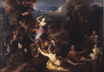
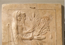

Demeter
The latter part of Demeter’s name, meter, means mother, although it is unclear exactly what type of mother she is; the ancients understood the de in the first part of her name to mean ‘earth’ and she was subsequently called the mother of the earth; but this is almost certainly nothing more than a convenient explanation based upon the function which she served as a goddess. More recently, one scholar has connected the first part of her name with the Greek verb damazo (δαμάζω), ‘to tame’ which would give her name the meaning 'tamer of the earth'. Another theory takes de/da to mean barley, such that she is the mother of barley. It is impossible with our current evidence to resolve this debate, but whatever de/da (in the Dorian dialect in Greece her name was Damater) means, her function as mother is well displayed in cult through the very close association that she has with her daughter Persephone. As we see in the Homeric Hymn to Demeter, the third of the major Homeric Hymns which we are looking at in this course, Demeter’s search for her daughter Persephone (known in Latin as Proserpina) provides the aition or explanation for the founding of the Mysteries at Eleusis, and for the cycle of the seasons in the Greek world.
Demeter (known in Latin by the name Ceres) is first and foremost a goddess of corn and wheat. She controls vegetation and the growth of crops, and was therefore a very important deity in the Greek world. It is often for us in modern urbanized settings hard to imagine the urgency which can be attached to crop growth, from which we are frequently very disconnected; but, for the Greek world, much as for the rural and farming communities of the world today, a bad year for crop growth was disastrous. Although she is not responsible for the reproduction of men and animals which is the realm of Aphrodite, Demeter is responsible for their sustenance through the provision of grain. The fact that Demeter is so closely tied to crop growth reflects the belief in the Greek world that the growth of vegetation had a divine cause. This is different to many modern views of the natural world, but similarities are nonetheless found; not everyone today will give offerings of our crop to a divinity in return for a good harvest, but in many world religions people continue to give thanks to a divinity before eating, in the belief that it is through the divine that humanity is given sustenance.
As I mentioned above, Demeter was intimately connected with her daughter Persephone (Proserpina) in literature and in cult, especially at Demeter's major religious centre Eleusis, just to the north of Athens. The two deities were referred to as ‘The Two Goddesses’, or as the ‘Two Demeters’, because they were so frequently paired. Persephone is in Greek mythology the daughter of Demeter and Zeus. She was also known in Eleusis as Kore which literally means the young one, or the daughter of Demeter. Although, exactly how they might have developed as a pair remains uncertain; given available evidence we might once again look to some striking parallels in the religions of the Near East. The connection of daughter and mother is not particularly well attested on its own in the Near East, but there are nonetheless striking parallels between the story we find in the Homeric Hymn to Demeter and the Near Eastern story of Duttur and her son Damu. In that story we find a mother searching for her lost child who has descended to the underworld, just as Demeter runs in search of Persephone. In the Near Eastern myth the god Damu descends into the underworld. His mother Duttur is bereft at the loss of her son and roams from one location to the next in search of her child. In the end, she decides that she will herself go to the underworld in order to gain his release. By going to the underworld, where in the surviving text of the story his sister Geshtinanna also appears, Duttur does return Damu to the world of the living, at which point the growth of vegetation is stressed. There are even parallels on the level of detail between the story of Demeter’s search for Persephone and Duttur’s search for Damu. Like Duttur, Demeter wanders the earth in despair, unaware that her child is actually in the underworld; they are both described as unwashed. There are differences, such as the fact that in the Hymn to Demeter we don’t actually see Demeter go down to the underworld to recover Persephone (she is regained through bargaining with Zeus). On the other hand, different version of the story of Demeter and Persephone in Greek literature there appear to have involved Demter's own descent into the underworld to rescue her daughter. It is at least tempting to think that the story of Persephone’s descent into the underworld, and Demeter’s search for her has some origins in the Near East, especially as the two trips to the underworld both culminate in the establishment of an annual fertility cycle.
Let us then look in more detail at the Hymn to Demeter. In the last chapter we considered the Hymn to Aphrodite, with its tone that I characterised as light-hearted. The Hymn to Demeter has a more solemn tone in its description of the foundation of the major religious site of the Demeter. The poet states at the outset what his subject is going to be, Demeter and her daughter Persephone, before passing immediately into the narrative. The first 90 lines of the poem introduce the abduction of Persephone by Hades and Demeter’s search. Hades carries off Persephone with the consent of Zeus when she is gathering flowers in a meadow (see image 1). This is, incidentally, a leitmotiv of Greek literature; never as a young Greek girl go gathering flowers in a meadow, for you are bound to be abducted by a god! Demeter hears her daughter’s cries, but doesn’t know what has happened: she wanders the world in search of her, and is finally told by Helios (the sun) that it was Hades who whisked her away.
{kind=link}
The longest section of the poem, lines 91-304, then recounts Demeter’s visit to the house of Celeus at Eleusis, where she goes into seclusion in anger at the gods. Demeter disguises herself as an old woman, and meets the daughters of Celeus at the Parthenion well in Athens. She lies to them, telling them that she was kidnapped by pirates in Crete and asks to be allowed to act as a nurse for the family. She goes to the palace to get the consent of their mother Metaneira who, despite the fact that Demeter makes a partial epiphany (revelation of her divinity) upon entering the palace, allows her to act as a nurse for her son Demophon. Demeter, from lines 212-55, takes Demophon, promises to keep him safe, and attempts to make him immortal; instead of feeding him with mortal food, she anoints him with ambrosia, the food of the gods, and at night she places him in a fire to become immortal. But, Metaneira spies on Demeter, and cries out when at night she sees her son placed into the fire; Demeter is angered and takes Demophon from the fire before he has been made fully immortal. She condemns mankind as foolish, and says that Demophon cannot be made immortal because of this, but that he will be honoured in an annual festival. She then makes a full epiphany and orders the Eleusinians to build her a temple and altar, and promises that she will teach them her rites. In fear at what has happened, the king Celeus has the altar and temple built, in which Demeter sits as she grieves for her daughter.
Then the third part of the poem, from lines 305-495, tells of the return of Persephone and the institution of the Mysteries, a religious festival, at Eleusis. Because she is so angry at the loss of her daughter, Demeter brings a dreadful famine on the earth which is dangerous for mankind. Zeus sends his messenger Iris, and then other gods, to ask her to end the famine, but she will not, until he sends Hermes to fetch Persephone from the underworld. Hades allows Persephone to go, but not before she has been given secretly a pomegranate (a fertility symbol, comparable to the apple in some other traditions); this binds her to Hades and will force her to return to him for a time every year. Naturally, mother and daughter are delighted to see each other on her return; Persephone recounts what she suffered. Zeus then summons them to Olympus, where he tells them that Persephone will live on Olympus for two-thirds of the year but, because she ate the  pomegranate, she will have to live in Hades for the remaining third of the year. (see image 2) Demeter consents to this, brings and end to the famine, and teaches religious her rites to the Eleusinian princes. The goddesses then go up to Olympus and the poem closes.
pomegranate, she will have to live in Hades for the remaining third of the year. (see image 2) Demeter consents to this, brings and end to the famine, and teaches religious her rites to the Eleusinian princes. The goddesses then go up to Olympus and the poem closes.
Disregarding for the moment the foundation myth of the Eleusinian religious site, broader implications of this myth for explaining the human condition can be found in the establishment of the annual cycle of the seasons. I said at the beginning of this chapter that the Greeks understood the growth of vegetation as having a divine cause; this story of Persephone’s abduction into the underworld, and the subsequent necessity for her to return there annually for one third of the year, explains what that divine cause is. The crop of corn was put into the earth in the Greek world in autumn, and grew a small amount until the winter came; then after lying dormant for several months, the spring and summer brought rejuvenation and growth. In short, Persephone’s stay in the underworld is a mythological aition (explanation of cause) for winter, and her return an explanation for the renewed fertility of spring.
Demeter was, first and foremost a goddess of corn fertility, and worship of her in the Greek world reflected this. Already in Homer, at Iliad 5. 500, she is described separating fruit and chaff in the wind. In the fifth century, Athenians gave 1/600 of all of their barley and 1/1200 of all of their wheat to Demeter in Eleusis, as a first-fruit offering to the goddess. Through the establishment of agriculture the goddess is a civilizing influence in mythology (see image 3).
{kind=link}